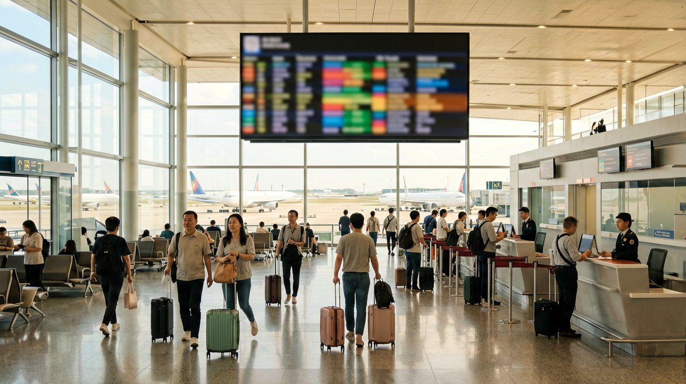
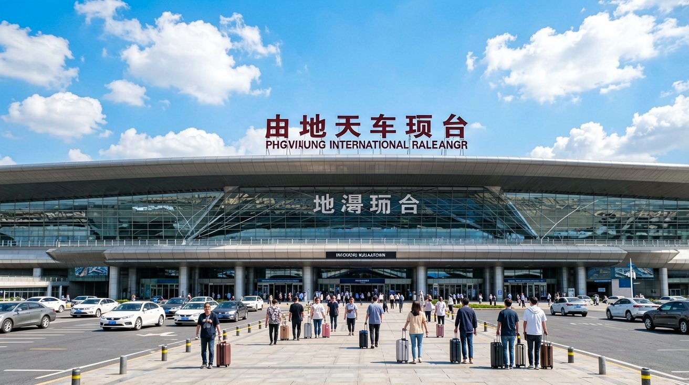
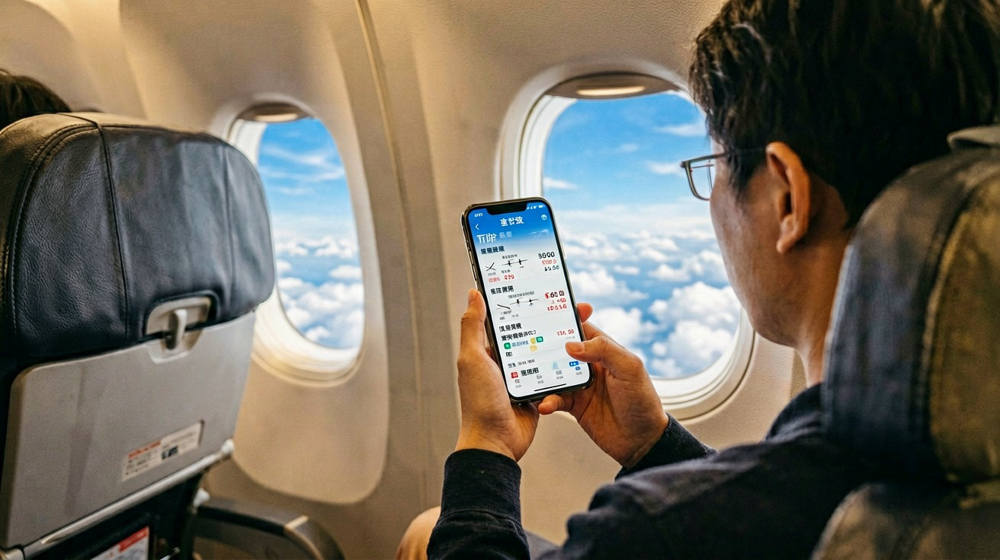
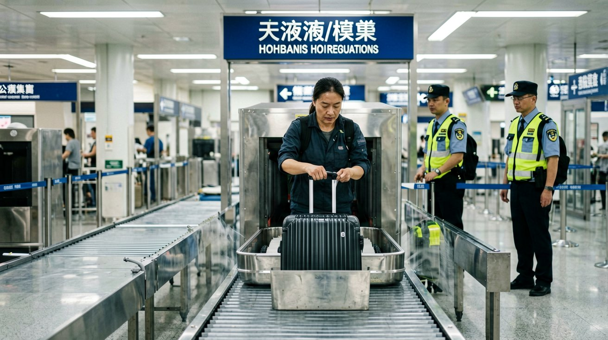
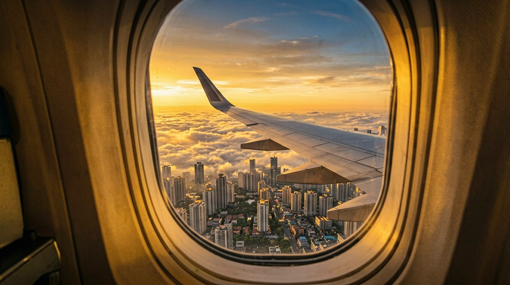

Last updated: June 2026.
Your flight to China may be the single largest expense of your trip. And after you land, you may well need to fly again — China is vast. Beijing to Guilin is roughly the same distance as London to Istanbul. This guide covers everything from booking international tickets to taking domestic flights: which airports serve as major hubs, what platforms to use for booking, how domestic flights differ from international ones, baggage rules, and what to expect at check-in and security.

When searching for international flights to China, cross-check prices across multiple platforms. Trip.com offers the most comprehensive coverage of China routes, with an English interface and foreign card payment support. Skyscanner and Google Flights are good for quickly browsing price ranges. Booking 3 to 6 months in advance is generally optimal — prices start rising noticeably within two months of departure.
Airlines flying to China fall into two groups. China's three major carriers — Air China, China Eastern, and China Southern — serve major cities worldwide, with service standards comparable to global full-service airlines. In addition, carriers from your departure country also operate direct routes to China. If direct flight prices are too high, connecting through the Middle East (Dubai, Doha) or Southeast Asia (Singapore, Bangkok) often cuts the fare significantly, at the cost of 4 to 8 extra hours of travel time. One practical note: Chinese airline official websites sometimes offer lower prices than third-party platforms, but may only accept Chinese bank cards for payment. If you hold a foreign card, Trip.com is the simplest option.

China's international flights are concentrated at several core hubs:
Beijing Capital (PEK) and Daxing (PKX) serve Beijing from the north and south respectively. PEK is the traditional international hub, while PKX opened in 2019 and now handles a significant share of routes. The two airports are about 70 km apart, with travel times to the city centre of roughly 40 and 50 minutes. Double-check the airport code when booking.
Shanghai Pudong (PVG) is China's busiest international gateway, receiving most intercontinental flights. Hongqiao Airport (SHA) primarily handles domestic routes. The two airports are about 60 km apart, connected by Metro Line 2 and airport shuttle buses.
Guangzhou Baiyun (CAN) is the southern China international hub. After landing, you can reach destinations across the Pearl River Delta efficiently by high-speed train or cross-border bus. Additionally, Chengdu Tianfu (TFU), Shenzhen Bao'an (SZX), and Kunming Changshui (KMG) also offer direct flights to Southeast Asia and select intercontinental routes. If your first stop is not Beijing, Shanghai, or Guangzhou, landing directly at one of these cities may be more efficient.

Domestic flights are an important complement to high-speed rail in your China travel plan. For very long distances — Beijing to Kunming, Shanghai to Lhasa, Guangzhou to Urumqi — flying is far more efficient than taking the train.
The most straightforward way to book domestic flights is through Trip.com, which offers an English interface, accepts foreign credit cards, and lets you complete the booking using only your passport number. Official apps from Chinese airlines sometimes offer lower prices, but most have Chinese-only interfaces and limited payment options. Competition on domestic routes is intense, with major carriers including Air China, China Eastern, China Southern, Hainan Airlines, and budget airlines such as Spring Airlines. Budget carriers offer low base fares but often exclude checked baggage and meals — compare the total cost before booking. A reliable rule: booking 2 to 4 weeks in advance usually yields good prices, while tickets purchased within a week of departure are the most expensive.

Taking a domestic flight in China follows a process similar to international flights, but there are a few things to be aware of.
Check-in: Arrive 3 hours early for international flights and 2 hours early for domestic ones. After booking on Trip.com, you can often check in through the app to get an electronic boarding pass — at the airport you only need to drop off your checked baggage. Note that most self-service check-in kiosks at Chinese airports require a Chinese ID card to operate. Passport holders should go directly to a staffed check-in counter.
Security: Standards are consistent with international norms — liquids must be in containers of 100 ml or less each, totalling no more than 1 litre, packed in a clear resealable bag. Power banks and lithium batteries must be carried in your hand luggage, with a rated energy of no more than 100 Wh (approximately 27,000 mAh). Lighters, matches, and any type of knife — including small scissors — are prohibited entirely.
Boarding: Domestic flights typically close the boarding gate 15 to 20 minutes before departure, and this is enforced strictly. Announcements are made primarily in Chinese with English as a secondary language. Your boarding pass shows the boarding time and gate number — wait near the gate in advance rather than relying on announcements to prompt you to move.

Domestic flight baggage policies vary by airline and fare type. Full-service airline economy class typically includes 20 kg of free checked baggage and 7 kg of carry-on baggage. Budget airline base fares usually exclude checked baggage entirely — you need to purchase it separately, with 20 kg costing roughly 100 to 200 RMB. If you have booked both an international and a domestic leg, note that international baggage allowances generally do not carry over to the domestic segment. If your international leg includes two 23 kg bags but your domestic leg is on a budget airline, you may need to purchase baggage for the domestic flight separately. Always verify the baggage allowance for each segment on your booking confirmation page.
Excess baggage fees at the airport are expensive — each kilogram over the allowance is charged at 1.5% of the full-fare ticket price, which can easily reach hundreds of RMB. Weigh your luggage at your hotel or using an airport scale before heading to the counter — far better than discovering the excess at check-in. A few money-saving tips: for long distances, choose flights over trains — Beijing to Kunming takes 2 to 3 hours by air versus over 10 hours by high-speed rail. Watch for airline membership day promotions and early-bird discounts, which can sometimes save over 30%. If your itinerary is flexible, choose a fare type that includes free changes — it costs more upfront but offers much greater flexibility.
This article is based on route and policy information as of June 2026.
Sources
Routes and fare policies may change. Verify the latest information before booking.